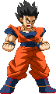

activate Destiny Mode (LV2)
Activating Destiny Mode has Gohan unlocking his full potential. This changes a few things, gameplay-wise.
- At activation, you will see an empty Destiny Bar (which is devided into 3 sections representing Lv1, Lv2 and Lv3) and a red kanji added to the screen.
- Gohan loses Power Charge, instead it fills up his Destiny Bar.
- Using Omni Kicks and Hurricane Kicks attacks gradually fills the Destiny Bar.
- The Omni Kicks do a bit more damage.
- Performing Super moves drain from the Destiny Bar instead of your Power Bar. A Lvl1 Super takes off 1 Lvl from the Destiny Bar.
- His Masenko becomes the spark version, which comes out instantly.
- Gekiretsu Ranbu costs Lv2 instead of Lv3 and takes you out of the mode upon activation. It also gets a unique Finisher depending on the Unleashed Bar level.
- At activation, you will see an empty Destiny Bar (which is devided into 3 sections representing Lv1, Lv2 and Lv3) and a red kanji added to the screen.
- Gohan loses Power Charge, instead it fills up his Destiny Bar.
- Using Omni Kicks and Hurricane Kicks attacks gradually fills the Destiny Bar.
- The Omni Kicks do a bit more damage.
- Performing Super moves drain from the Destiny Bar instead of your Power Bar. A Lvl1 Super takes off 1 Lvl from the Destiny Bar.
- His Masenko becomes the spark version, which comes out instantly.
- Gekiretsu Ranbu costs Lv2 instead of Lv3 and takes you out of the mode upon activation. It also gets a unique Finisher depending on the Unleashed Bar level.